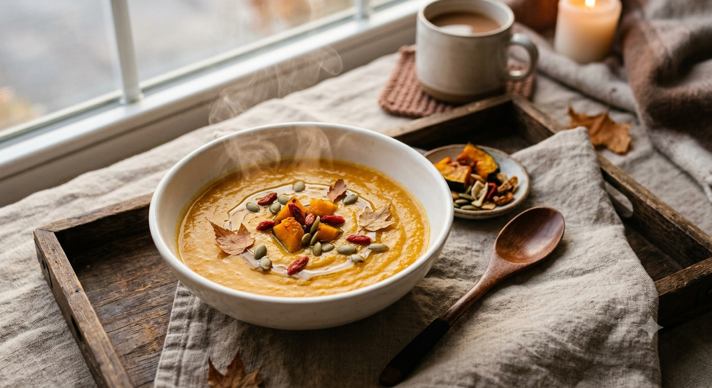
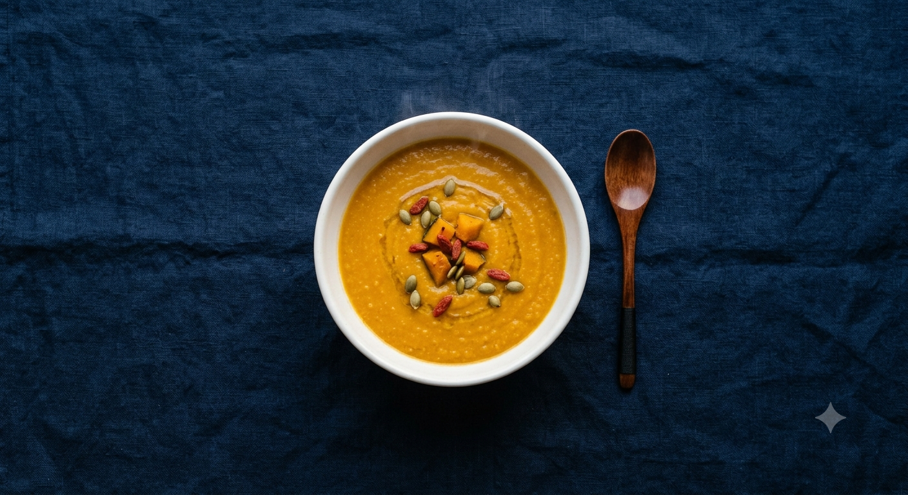

커피베이커리과 AI 활용 수업 결과물
2026 정선정보고 전공별 AI 활용 수업자료 | 선생님이 AI로 만든 수업용 노래 · 웹앱 · 이미지
🎵
노래 밥 짓기 네 단계
01 [한식조리] 밥 조리하기
🧮
웹앱 밥물 계산기
01 [한식조리] 밥 조리하기
▶ 새 창에서 실행

시안A 단호박죽 45도(AI 생성)
02 [식공간연출] 푸드 스타일링 계획하기

시안B 단호박죽 탑뷰(AI 생성)
02 [식공간연출] 푸드 스타일링 계획하기